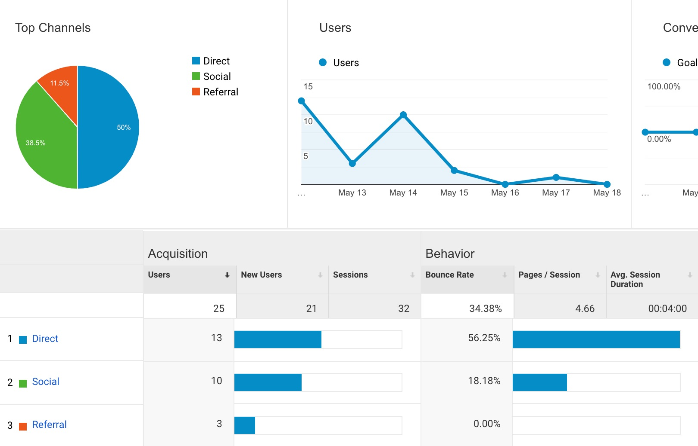

Google Analytics
Wouldn’t it be a great if we had a tool that captured key data from everyone that visited our business? Moreover, what if that data gave us insight about our visitors that also helps us improve our product and increase our sales? Google created a free marketing resource to give us this bird's-eye view of our visitors, called Google Analytics. For those unfamiliar with Google Analytics, it is a free tool that can help track the digital marketing effectiveness of your website.
This week I added Google Analytics (GA) on all the pages in this User Science Journal in the hopes to learn more about its visitors. Google makes adding GA to your pages very simple, your just need a Google account and sign in to Google Analytics. Then follow the instructions to install the global site tag (gtag.js) to your webpage. This is done simply by copying the codes provided on their Get Started page and pasting it on every page on your website.
Pre-Evaluation
Google Analytics is a tool with vast capabilities, in this week's test I will just barely scratch the surface of what GA has to offer. Prior to deploying GA on the User Science Journal pages, I made a few preliminary statements about the website that I will use the GA data to test against:
- The visitors will be from the Seattle-area.
- The most popular page will be the Index page.
- More visitors will be on mobile vs. desktop.
- Visitors will come mainly from the link on my Facebook post.
Results Summary
The data from the location of the visitors were what I had expected, mainly from the Seattle-area. I was surprise to find that Ashburn, Virginia was second on the list. I was also surprise to see Hemet and Burbank California on the list.
The data that surprised me most were the listing of the most viewed pages. I expected the Index page to be the most viewed, but the top two pages were Post 6 and Post 4, with the Index page being third. No one clicked on the About page, which was also somewhat surprising. The other surprise was the type of devices used, the numbers were evenly split. I had expected users to be more on their mobile than desktops.
Screenshot of the number of page views and sessions by devices:
The last findings were also unexpected. I had posted a link on my Facebook wall for friends and friends of friends to generate traffic to the User Science Journal. I thought this would be the source of most of my visitors. However, surprisingly only 38.5% were from Facebook, 50% of the visitors were from Direct link, the rest were from the link on Canvas and Github.

I also analyzed the overall behavior flow of the website. It is interesting to note how each session flowed. Users who started a session on the Index page followed through to other pages 83.3% of the time with only 16.7% drop offs. In contrast, users who started on Post 4, dropped off 85.7% vs 14.3% continued to other pages. This behavior falls in line with expectation. It makes sense for those who started at the Index page to click on to another page since the Index only had a listing of the other pages.
Conclusion
As someone who makes a conscious effort to keep my web tracks as private as possible, it is astonishing how much data is still captured by Google Analytics. As I studied the results from the data collected, I noticed the increase in my uneasiness. I returned to my question at the beginning of this blog, is it "great" that we have access to this information?
Although I was somewhat disappointed the more detailed-demographic information from my visitors, i.e. age, gender and interests were not captured, I was also relieved. User data collection and analysis can be a great way for businesses to gain insight about their customers. However, businesses must also take precautions to inform customers of their privacy.
I don’t think data capture is all nefarious and money-making schemes, but I do think websites need to be clear to visitors how they are tracked, just like brick and mortar stores with video cameras are required to post a sign, so should websites.